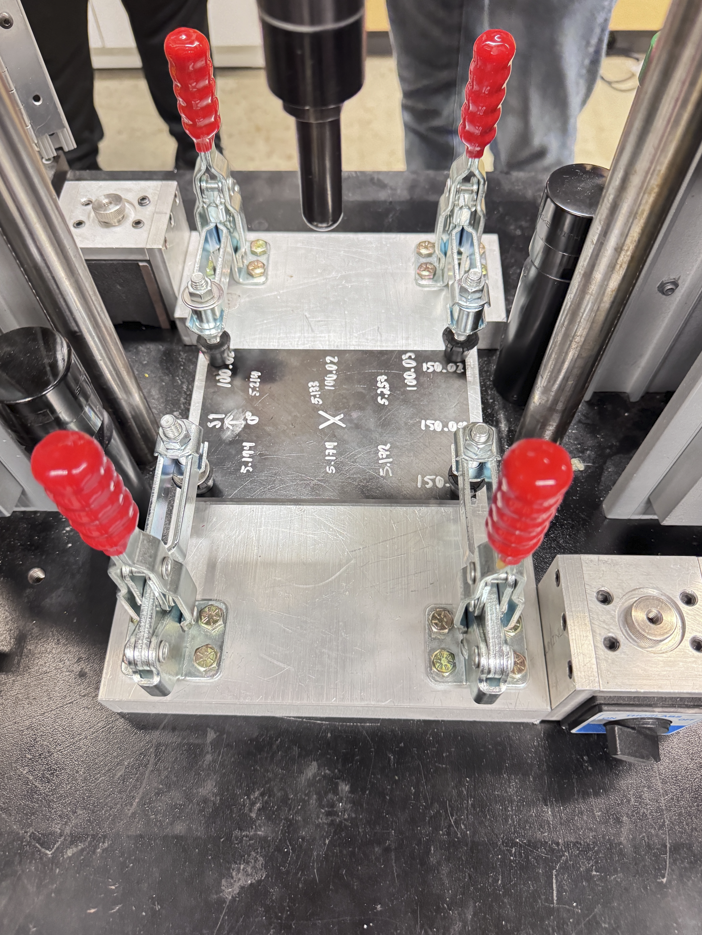

Composite Manufacturing
Full-scale prepreg layups, tooling preparation, foam-core integration, and coordination of complex manufacturing operations.
I'm an Australian aerospace engineering student at Purdue University working at the intersection of composite materials, structural mechanics, and manufacturing. My experience spans large-scale composite structures for CERN, experimental failure characterization, and computational modeling.
Composite Manufacturing · CNC Process Development · Dimensional Metrology · Production Engineering

At Purdue University's Composites Manufacturing and Simulation Center, I have contributed to the manufacturing and integration of large-scale carbon-fiber composite structures for the CERN CMS High-Luminosity LHC upgrade. My work spans full-scale composite layups, CNC process development, laser metrology, geometric correction, and production coordination.
Full-scale prepreg layups, tooling preparation, foam-core integration, and coordination of complex manufacturing operations.
Development and refinement of machining procedures, workholding strategies, and dimensional inspection for precision composite-system components.
Laser scanning, deviation analysis, and iterative geometric correction of large-scale composite structures.

Led experimental planning for impact and residual-strength characterization of CFRP laminates, including equipment troubleshooting, damage metrology, and analytical failure comparisons.

Experimental investigation of composite microstructure, anisotropic mechanical response, laminate architecture, and failure criteria using DIC, microscopy, and analytical modeling.

Independent research into physics-informed laminate representations for machine-learning prediction of thermoelastic failure indices using Classical Laminate Theory.
My interests lie in understanding how composite structures behave, how they fail, and how to manufacture them reliably.
Through my work at Purdue's Composites Manufacturing and Simulation Center and my academic research, I've developed experience connecting analytical models with experimental observations and real manufacturing constraints.
I particularly enjoy problems that require both theoretical understanding and practical experimentation, whether that involves investigating unexpected dimensional deviations, developing a manufacturing process, or evaluating the limitations of a structural failure model.
I'm interested in opportunities involving composite structures, manufacturing, experimental mechanics, and engineering research.
fli335491@gmail.com ↗